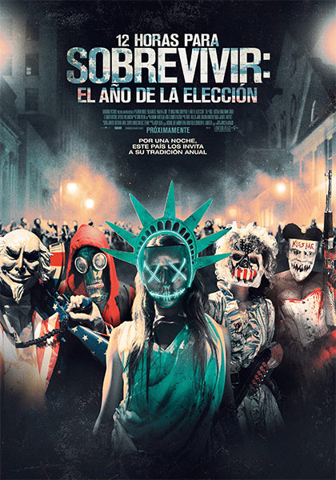

|

|
Detalles
Años después de perdonar la vida al hombre que mató a su hijo, el ex sargento de policía Barnes ahora es el jefe de seguridad de la senadora Charlie Roan, una candidata presidencial que es un blanco para asesinar en la noche de la depuración debido a sus intenciones de eliminar esta práctica.
Títulos: 12 horas para sobrevivir: El año de la elección | Election: La noche de las bestias (castellano) | The Purge: Election Year
Géneros: Acción | Terror | Ciencia ficción
Director: James DeMonaco
Elenco: Frank Grillo, Elizabeth Mitchell, Mykelti Williamson, Joseph Julian Soria, Betty Gabriel, Terry Serpico, Edwin Hodge, Kyle Secor, Barry Nolan, Liza Colón-Zayas, Ethan Phillips, Adam Cantor, Christopher James Baker, Jared Kemp, Brittany Mirabile
|